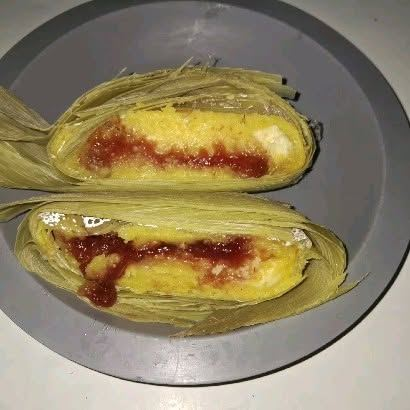
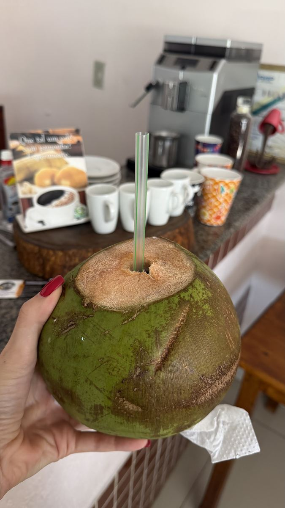
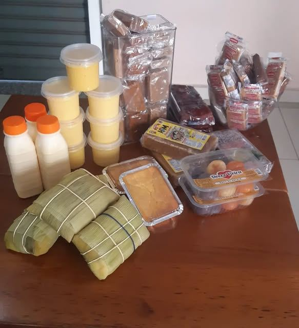
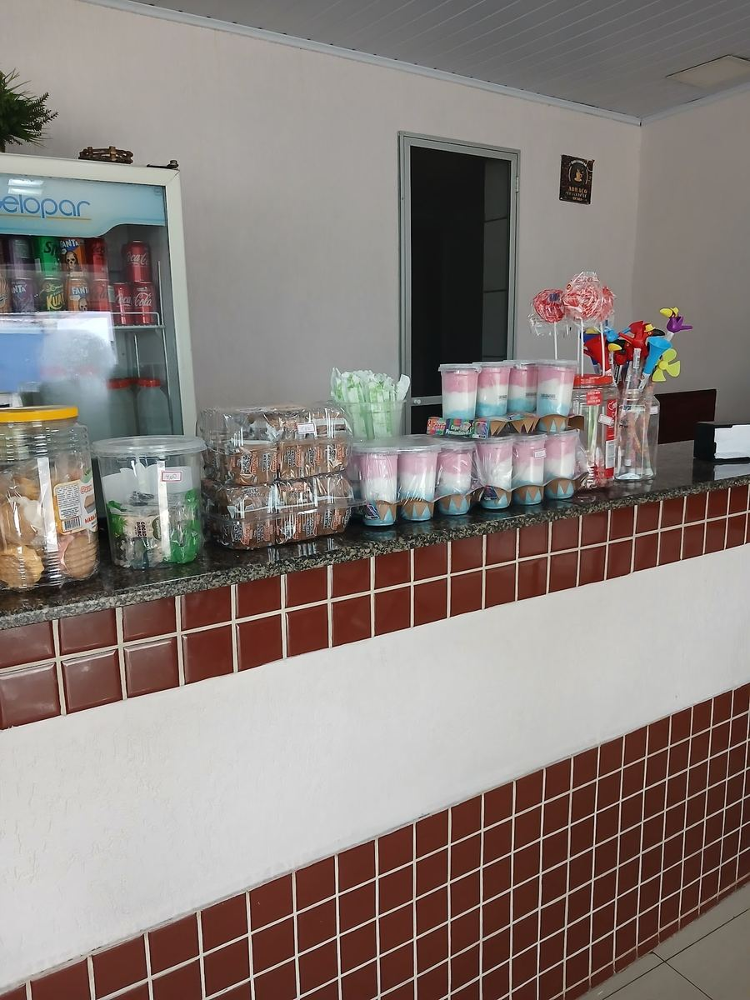
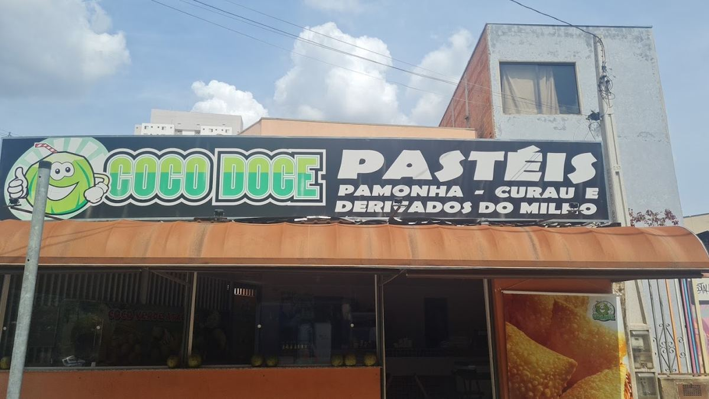

4,9 ★ · 297 avaliações no Google
Pastel sequinho e pamonha de verdade.
Pastéis, pamonha, curau e outros derivados do milho, caldo de cana e água de coco gelada no Jardim Nova Europa. Tudo feito com carinho, de segunda a sábado.
Segunda a sábado, das 9h às 18h



O que tem
Do milho, do coco e da cana
As palavras que mais aparecem nas avaliações são pamonha, água de coco e caldo de cana.
Do milho
- PamonhaA mais elogiada da casa
- CurauCremoso, de colher
- Suco de milho"Delicioso", segundo os clientes
- Outros derivadosBolos e doces de milho
Pastéis
- Pastel sequinhoFrito na hora
- Pastel de queijoOpção vegetariana
- Outros saboresPergunte no balcão
- Para levarRetirada e delivery
Para beber
- Água de cocoGelada, no próprio coco
- Caldo de cana"O melhor da região", disse uma cliente
- CafezinhoPara acompanhar

O balcão
Pequeno, limpo e com gente gentil
Um lugar tranquilo para uma pausa rápida, sozinho ou com a família.
O caldo de cana é o melhor que já tomei na região! Pastel sequinho e gostoso! Tem água de coco, pamonha, curau e até um cafezinho.Silvania · Google
Ótimo atendimento, pastel maravilhoso, lugar limpo e preços justos!Resumo das avaliações · Google
Pastel gostoso, pamonhas maravilhosas e água de coco gelada! Além de um atendimento sempre atencioso.Avaliação no Google

Visite
Av. São José dos Campos, 1423
| Segunda a sábado | 9h às 18h |
| Domingo | Fechado |
Jardim Nova Europa, Campinas (SP)
Peça pelo Instagram @coco__doce ou passe no balcão.